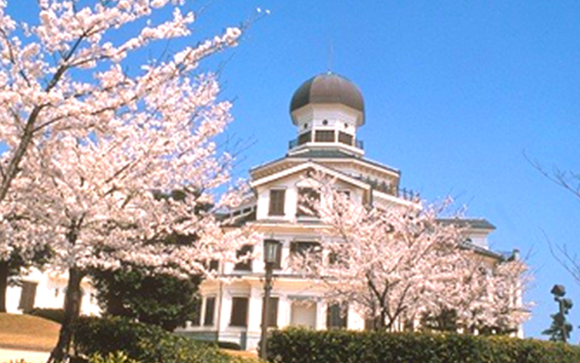
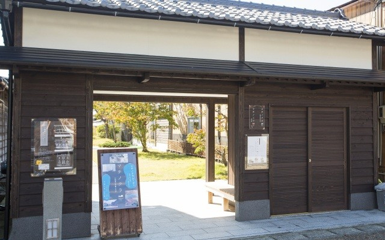
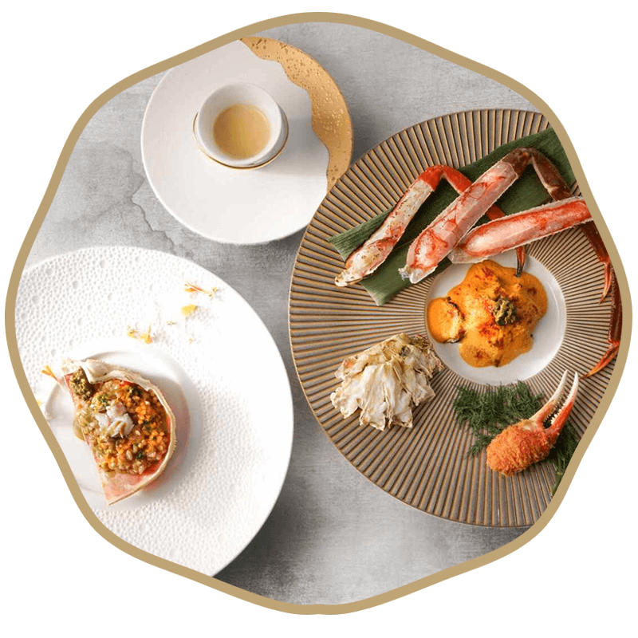
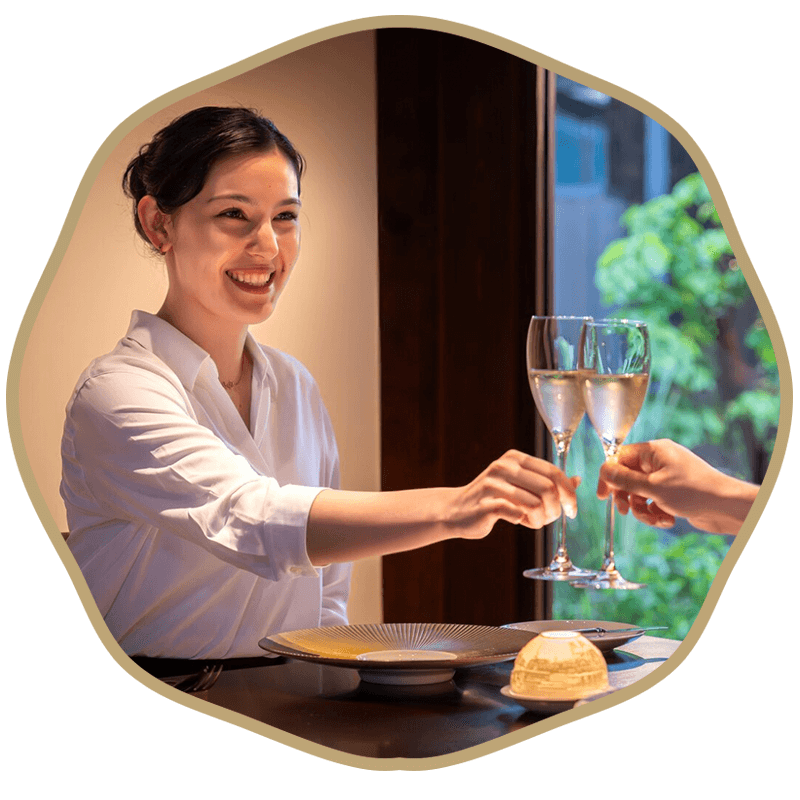
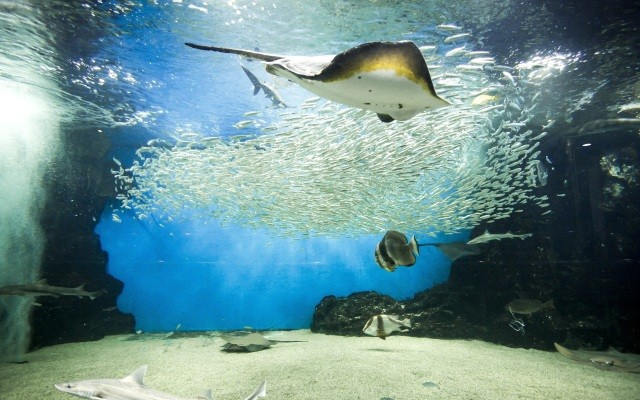
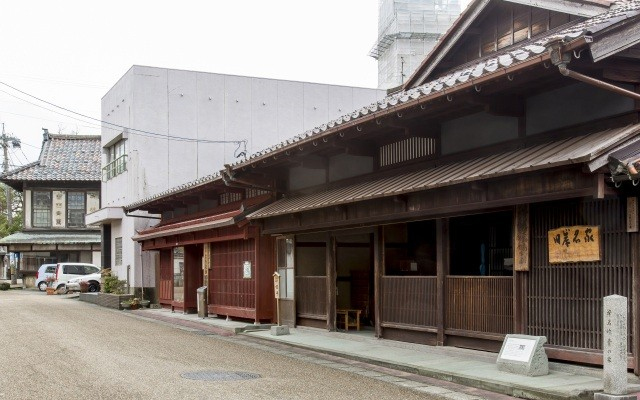
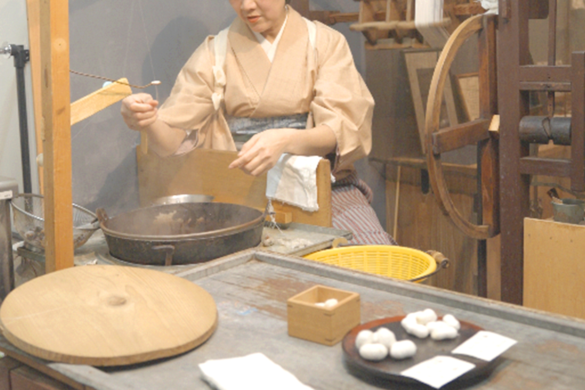
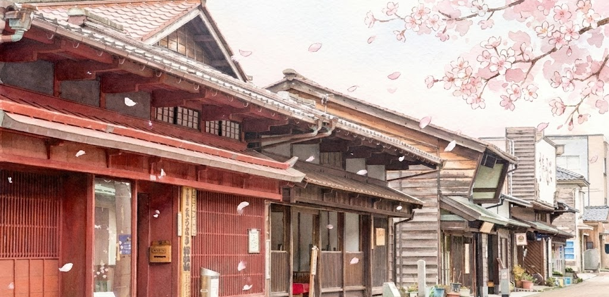

STORY-三國湊の魅力
婦人画報が選んだ、三國湊の至宝
FUJINGAHO SPECIAL ー 婦人画報特集
COURSE ー 体験する
春の三國湊 観光モデルコース
春の三國湊 1泊2日 スタンダードコース
日本海の絶景、歴史ある港町の風情、そして文化体験を満喫する定番コース。
初めての方にもおすすめの、三國湊の魅力を凝縮した旅程です。
1日目

12:00 東尋坊
断崖絶壁が続く日本海の絶景。柱状節理の岩肌は世界でも珍しい地質です。

14:00
雄島
赤い橋を渡って辿り着く、「神の島」と呼ばれる神秘的な島。

15:30
龍翔博物館
三國湊の歴史や文化を学べる博物館。ユニークな外観も魅力です。

16:00
町の蔵
歴史的な蔵を利用した施設で、港町の風情を感じられます。

16:30
三国湊きたまえ通り散策
情緒溢れる格子戸の町家が並ぶ通りを散策。

17:00
チェックイン
オーベルジュほまち三國湊などの宿で、旅の疲れを癒してください。
2日目

10:00
丸岡城
現存天守を持つ日本最古級の城。春は桜の名所としても知られます。

12:00
昼食（越前そば）
福井名物のおろしそばを堪能。
春の三國湊 2泊3日 悠悠探訪コース
三國湊の歴史、自然、そして周辺の文化までを深く知る、ゆったりとした贅沢プラン。
忙しい日常を忘れ、心ゆくまで「上質な日常」に浸るためのコースです。
1日目
（1泊2日プランの1日目と同様にお楽しみください）
2日目
10:00
丸岡城
歴史ある城郭をゆっくりと見学。

12:30
昼食
福井名物の大きな油揚げを堪能.

14:00
瀧谷寺
国宝や名勝庭園を持つ、静寂に包まれた古刹。

15:30
近藤古美術
歴史ある古美術品に触れる上質な時間。
17:00
宿 チェックイン（連泊）
連泊による、より充実したリフレッシュタイムを。
3日目

09:00
伝統工芸体験
越前和紙の手漉き体験など、福井の伝統に触れる。
12:00
昼食
旅の締めくくりに、おろしそばでさっぱりと。
13:00
帰路へ
お土産を選んで、思い出と共に帰路へ。
STAY ー 滞在する
オーベルジュほまちで過ごす、特別な時間
Auberge Homachi
三國湊の食文化と自然を味わう宿
オーベルジュほまちは、日本海を一望できる高台に位置するオーベルジュです。
地元三国港で水揚げされた新鮮な魚介類、福井県産の旬の食材を使った創作料理と、
東尋坊・雄島を望む絶景、そして心からくつろげる上質な空間で、特別な滞在体験をご提供します。

宿泊プラン

当サイト限定10%OFF

【期間限定】越前がに×吉野健シェフ監修 冬の極上フレンチ・フルコースプラン（2食付）
越前がにの狩猟期間のみ提供される、吉野健シェフ監修の特別ディナー付きプラン。冬の味覚「越前がに」と福井の旬食材、そしてシェフのスペシャリテが織り成すモダンでクラシックなフレンチをお楽しみいただけます。夕食は越前がにを使用した季節限定メニュー、朝食は福井の恵みを活かした洋食セット。冬のみ堪能できる極上の美食体験をご提供します。
- 越前がにを使用した季節限定フレンチフルコース
- 吉野健シェフ監修（パリ「ステラ・マリス」継承の伝統）
- 夕食：17:30〜22:00（最終入店19:00）
- 朝食：ワトム農園サラダ／そば粉ガレットなど福井の恵み洋朝食
- アレルギー対応可（3日前まで）
- ドレスコード：スマートカジュアル
- JR芦原温泉駅〜送迎可（事前予約制）
1泊（大人2名）
¥129,000〜¥138,000
当サイト限定10%OFF / クーポンコード: 9284DC
（お申し込み：2025年6月末日まで / ご宿泊：2025年8月末日まで）
クーポンコードは予約画面でご登録ください。なお、クーポンコードには除外日がございます。
クーポンコードは予約画面でご登録ください。なお、クーポンコードには除外日がございます。

当サイト限定10%OFF
シャンパーニュ・フリーフロー＆吉野健シェフ監修スペシャリテ・ディナープラン（夕食のみ）
ミシュラン星獲得の吉野健シェフが監修する、福井の旬食材とスペシャリテを堪能するフレンチディナーに、シャンパーニュ「Deutz Brut Classic」を含むフリーフローが付いた夕食付きプラン。パリの伝統と福井の食文化が融合した、モダンでクラシックな美食体験をご提供します。
- 吉野健シェフ監修フレンチコース（スペシャリテ＋旬食材）
- シャンパーニュ含むフリーフロー（Deutz Brut Classic）
- ワイン／ノンアル／食後酒／地酒「常山“飛”」
- 夕食は事前予約制（17:30〜19:00最終）
- アレルギー対応可能（3日前まで）
- ドレスコード：スマートカジュアル
- 町家滞在（IN14:00 / OUT11:00）
- JR芦原温泉駅〜送迎可（事前予約制）
1泊（大人2名）
¥87,000〜¥105,000
当サイト限定10%OFF / クーポンコード: 9284DC
（お申し込み：2025年6月末日まで / ご宿泊：2025年8月末日まで）
クーポンコードは予約画面でご登録ください。なお、クーポンコードには除外日がございます。
クーポンコードは予約画面でご登録ください。なお、クーポンコードには除外日がございます。

当サイト限定10%OFF
大人の三國湊ひとり旅 朝食付きブレジャー優待プラン
仕事と観光を組み合わせた「ブレジャー」スタイルに最適な、大人のための一人旅優待プラン。三國湊の町家で過ごしながら、その土地の文化や芸術に触れ、仕事終わりの時間を豊かにする滞在を提供します。朝食は福井の恵みを活かした洋食セット。便利な送迎やフィットネスルーム、地酒のウェルカムドリンクなど、一人旅でも快適に過ごせるサービスが揃っています。
- 朝食：福井の恵みを活かした洋食セットメニュー
- JR芦原温泉駅〜送迎サービス（事前予約制）
- フィットネスルーム完備（シューズレンタルあり）
- ウェルカムドリンク：福井地酒の飲み比べ
- 部屋にスキンケアセット、洗濯乾燥機、オーブンレンジ完備
- 町家滞在は靴を脱いで寛げるシューズオフスタイル
- 日本文化体験（三味線・盆栽・提灯づくり等／別途有料）
- 最長3連泊まで利用可／大人のみ対象
1泊（大人1名）
¥25,000
当サイト限定10%OFF / クーポンコード: 9284DC
（お申し込み：2025年6月末日まで / ご宿泊：2025年8月末日まで）
クーポンコードは予約画面でご登録ください。なお、クーポンコードには除外日がございます。
クーポンコードは予約画面でご登録ください。なお、クーポンコードには除外日がございます。

EXPERIENCE ー 探索する
三國湊で味わう、多彩な体験

東尋坊
国の天然記念物に指定された断崖絶壁。世界三大奇勝の一つとして知られ、柱状節理の迫力ある景観が楽しめます。遊覧船での海上からの眺めも絶景。

雄島（神の島）
赤い朱塗りの橋を渡って訪れる神秘の島。島全体が大湊神社の境内で、原生林に囲まれた参道は神聖な雰囲気。パワースポットとしても人気。

越前松島水族館
日本海の魚を中心に展示する体験型水族館。イルカショーやペンギンの散歩、魚との触れ合いコーナーなど、ファミリーにも人気のスポット。

三國湊きたまえ通り
北前船交易で栄えた当時の面影を残す町並み。格子戸の町家が並ぶ路地を散策しながら、老舗の和菓子店や工芸品店でのお買い物が楽しめます。

三國湊町家館
江戸時代の豪商の邸宅を公開。当時の生活様式や建築様式を見学できます。庭座や蔵なども見どころ。北前船の歴史を学べる資料も展示。

北前船資料館
三國湊の繁栄を支えた北前船の歴史を紹介。船の模型や航路図、交易品など貴重な資料を展示。当時の港町の賑わいを感じられます。

和菓子処 大和甘林堂
三國湊で長く愛される老舗和菓子店。看板商品の「うぐいす餅」は、春の訪れを告げる上品な甘さと香りが特徴です。代々受け継がれてきた伝統の製法を守りながら、四季折々の美しい和菓子を丁寧に作り続けています。港町の歴史と共に歩んできた、心温まる味わいをお楽しみください。
大和甘林堂について詳しく

くらしつむぐあとりえ
福井の伝統工芸と現代の暮らしを繋ぐ、体験型アトリエ。越前和紙を使った小物作りや、地元の素材を活かしたクラフト体験ができます。作家の方から直接指導を受けながら、自分だけのオリジナル作品を制作。福井の工芸文化に触れる、貴重な体験です。
体験プログラムを見る
SEASON ー 春を感じる
春の三國湊 ー 季節の見どころ

春爛漫の桜めぐり
丸岡城の天守閣を彩る約400本のソメイヨシノは圧巻。足羽川沿いの桜並木、三国神社の境内など、市内各所で桜を楽しめます。見頃は3月下旬〜4月上旬。
新緑に包まれる雄島
春の雄島は新緑が美しく、森林浴に最適。原生林の中を歩く参道は、マイナスイオンたっぷり。野鳥のさえずりを聞きながら、心身をリフレッシュ。
春の味覚を堪能
甘海老、ホタルイカ、サヨリなど春の魚介が豊富。山菜や筍も旬を迎えます。越前がれいの刺身や、新玉ねぎを使った料理など、春ならではの味わいを。
ACCESS ー アクセス
アクセス・交通案内
東京・大阪・名古屋から、三國湊へのアクセス方法
お車でお越しの方

東京方面から
- 東京IC → 関越自動車道・北陸自動車道
- 金津IC → 約15分で三國湊エリア
所要時間：約6時間 / 高速料金：約10,000円
大阪方面から
- 吹田IC → 名神高速・北陸自動車道
- 金津IC → 約15分で三國湊エリア
所要時間：約3時間 / 高速料金約6,000円
名古屋方面から
- 名古屋IC → 東海北陸自動車道・北陸自動車道
- 金津IC → 約15分で三國湊エリア
所要時間：約2時間30分 / 高速料金：約5,000円
各宿泊施設に駐車場を完備。東尋坊や主要観光スポットにも駐車場がございます。
※混雑時期は事前予約をおすすめします。
■ 駐車場のご案内
現地での移動について
レンタカー
芦原温泉駅周辺に複数のレンタカー会社あり。自由に観光地を巡りたい方におすすめ。
観光周遊バス
主要観光スポットを巡る周遊バスを運行。1日乗車券でお得に観光できます。
タクシー
観光タクシープランあり。地元を熟知したドライバーが案内する貸切プランも人気。
REVIEWS ー お客様の声
お客様の声
オーベルジュほまちを訪れた皆様からの感想
M.K様（58歳・女性）
東京都 / 2024年4月訪問
婦人画報で見て興味を持ち訪れました。
オーベルジュでの食事が素晴らしく、地元食材の美味しさに感動。東尋坊の絶景も期待以上でした。
春の桜が美しく、また違う季節にも訪れたいです。
S.T様（62歳・女性）
大阪府 / 2024年3月訪問
町家の宿に宿泊しました。格子戸や坪庭が風情があり、まるで江戸時代にタイムスリップしたよう。
朝市で地元の方と交流できたのも良い思い出です。
静かで落ち着いた大人の旅ができました。
H.Y様（55歳・女性）
愛知県 / 2024年4月訪問
友人と2泊3日で訪れました。
東尋坊の遊覧船、雄島の散策、丸岡城の桜と見どころがたくさん。
越前ガニの時期ではなかったですが、春の魚介類も十分美味しかったです。次は冬に来たいです。
BOOKING ー ご予約
特別プラン・ご予約
当サイト限定の特別キャンペーン
春の三國湊満喫 ー 当サイト限定スペシャルプラン
このページをご覧いただいた方だけの特別プランをご用意しました。
春の三國湊を存分にお楽しみいただける、充実の内容です。
【食べ歩きもできる朝食付】地域食＆町家ステイプラン
北前船の文化が残る三國湊の地で、古民家を再生した町家に泊まる「ホテルステイ」と、地元の食を愉しむ1泊朝食付きプラン。
1泊朝食付き / 10% OFF適用
朝食：ワトム農園直送のサラダや福井県産そば粉のガレットなど
当サイト限定10%OFF / クーポンコード: 9284DC
（お申し込み：2025年6月末日まで / ご宿泊：2025年8月末日まで）
クーポンコードは予約画面でご登録ください。なお、クーポンコードには除外日がございます。
（お申し込み：2025年6月末日まで / ご宿泊：2025年8月末日まで）
クーポンコードは予約画面でご登録ください。なお、クーポンコードには除外日がございます。
- 朝食：洋食セットメニュー（7:30～10:00）
- 一棟一棟趣の異なる町家滞在（全棟駐車場完備）
- チェックイン 14:00～ / チェックアウト ～11:00
- JR芦原温泉駅～フロント棟までの送迎（要予約）
- アレルギー・ベジタリアン対応可（3日前迄）
- 町歩きや伝統料理体験などアクティビティ充実
【まち歩き体験付】龍翔博物館・瀧谷寺巡り＆2食付プラン
古き湊町・三国の文化歴史を直接学び、感じる。専属ガイドと巡る瀧谷寺まち歩き体験が付いた、1泊2食付きの贅沢な滞在プラン。
1泊2食付き / 10% OFF適用
夕食：吉野建シェフ監修フレンチコース
当サイト限定10%OFF / クーポンコード: 9284DC
（お申し込み：2025年6月末日まで / ご宿泊：2025年8月末日まで）
クーポンコードは予約画面でご登録ください。なお、クーポンコードには除外日がございます。
（お申し込み：2025年6月末日まで / ご宿泊：2025年8月末日まで）
クーポンコードは予約画面でご登録ください。なお、クーポンコードには除外日がございます。
- ガイドと巡る瀧谷寺まち歩きコース（約2.5h）
- 毎週金・土・日開催（チェックイン翌日10:00～）
- 夕食：福井の食材を活かした本格フレンチ
- 趣の異なる一棟貸し町家滞在 / 朝夕2食付き
- JR芦原温泉駅からの送迎対応（事前予約制）
- アレルギー、ベジタリアン、お子様連れ対応可
TOP